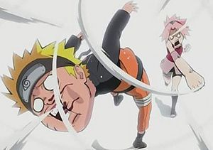
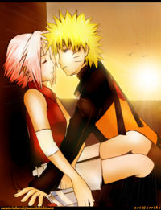
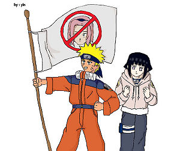

Narusaku
 De: La Frikipedia, la enciclopedia extremadamente seria.
De: La Frikipedia, la enciclopedia extremadamente seria.
 Se puede sentir el amor entre los dos...
«Mientras esos dos se alejen de mí, me vale»
~ Sasuke Uchiha expresando su aficcion al narusaku
«¡No Naruto no me abandones por favor!»
~ Sasuke arrepintiendose de lo que dijo arriba
«Se quieren a matar ^.^»
~ Narusaku apoyando el profundo amor que se tienen naruto y sakura
«Pobres niños me dan lastima que crean en esa mentira»
~ NaruSaku sangrón hablando del NaruHina
«Y a todo esto ¿quien les pone los nombres a la parejas?»
~ Todos preguntandonos lo mismoo
«¡Ya basta de peleas naruhina y narusaku! ¡Si quieren ver romance vayanse a ver un shojo!»
~ Masashi me subo en tu moto hasta los huevos de las peleas narusaku y naruhina (pero no aceptando que le gusta más el sasunaru)
«Ya era hora de ponerle fin a semejante gilipollez»
~ Masashi Kishimoto aliviado de acabar con tantas discusiones Naruhina y Narusaku]]
NaruSaku (pero más escrito como sakunaru es una corriente, fenómeno, verdad, fuerza politica, la ley del universo, la única pareja real (es llamado de muchas maneras) que apoya la relación sentimental y sadomasoquista sexual entre Naruto Uzumaki y Sakura Haruno.
Origen
Todo se remonta al capitulo tres tanto del anime como del manga de NaruHina apoyaban la relación de Hinata y del niño ¨de veras¨. Así que desde lo más bajo del inframundo surgieron los narusakus, para pararle los pies a esos fumados de NaruHuana (NaruHina)ya que los tipos se hacían ciegos al ver el obvio SasuSaku, pero como los narusakus odiaban a sasuke (y por supuesto, al evidente yaoi que se mostró durante TOOOODA la serie), prefirieron emparejarlo con sakura...
Objetivo
El objetivo del narusaku es crear a un ninja superpoderoso creado de los genes de estos un niño o niña con fuerza sobre humana potencializado con del chakra del kyubi en pocas palabras Sansón.
Características de un tipo NS
- Creen que Naruto y Sakura se enamoraran y serán felices por siempre.
- Odian a Hinata sobre todas las cosas por amar a Naruto.
- Dibujan doujins y fanarts que demuestren su apoyo al Narusaku.
- Hacen AMVs que demuestran su apoyo a esta pareja.
- Hacen doujins hentais donde se muestre a Naruto y Sakura en acto carnal (lástima que hay más hentai SasuNaru) (El SasuNaru tambien es genial es evidente ke Sasuke es gay y Naruto bisexual xD)(amén)
- Los fans del Naruhina los amenazan donde van, por eso la mayoria de NaruSakus los odian.
- Van con su novia o novio a las convenciones disfrazados de ellos dos y mostrar su cariño mutuo como si fueran ellos los que lo hicieran. Pobre quien hace el cosplay de Naruto...
- Afirman que Sakura es la chica más bonita de la serie un millón de veces a pesar de estar plana como tabla de planchar y frentona como nadie. (Aunke Naruto afirmo en un episodio en el que Sakura pedia consejo a Tsunade para tener mas pecho que a el le gustan mas las chicas planas xD)
- Ven todos los capítulos de la serie a ver si pasa algo en su relación.
- Ya no leen el manga. (Yo si lo leo ¬¬)(como si me importará)
- Prometen dejar de ver la serie partir de que salga el episodio de la pelea de Naruto contra Pain.
- Odian por completo a Kishimoto. (En realidad lo amamos porque nos da mucho fanservice xD)(de Sakura teniendo sepso)
- Sólo ellos piensan que si Sakura quieree irse con Sasuke, es una infalible prueba NaruSaku. (Bueno ella intento envenenarlo... eso si que es una prueba de primera xD)--->(pero a pesar de eso no logro envenar a Sasuke, solo 3 posibilidades: no lo hizo porque lo ama, por que sigue siendo una inutil o porque recordo a hinata lo cual le causo asco y por poco no se aguanta las ganas de vomitar "no te preocupes Sakura a todos nos pasa eso LOL")
Los diez mandamientos de Narusaku
 Fanart NaruSaku copiado de un SasuSaku, malditos plagiadores...
 Bandera de los anti-narusakus si esque hinata no fuera relleno
1.Te gustará el NaruSaku mas que nada.
2.Te gustara el sado-masoquismo, asi que ya puedes ir comprando látigo y cuero.
3.Disfrutaras que tu novia te golpee cuando quieras hacer las chorradas narusaku.
4.Discutiras con los NaruHina en todas las paginas de internet y les intentaras lavar el cerebro inútilmente.
5.Cuando vayas a los expo-animes no olvides de hacer cosplay narusaku, que se vea divertido o romantico, y claro esta uno en que tu novia te golpea y tu feliz de la vida xDDD.
A Naruto le encanta esto del sadomaso)si vas a hacer un FANFIC NaruSaku, esmérate deja los estudio, menos el de literatura so estupido, hazlo romantico o divertido, nunca lo olvides, al final o a la mitad escriben que se declaran, (opcional si haces uno de institutos*).
6.Te unirás a los foros de naruto en pro al NaruSaku , o las páginas mismas de NaruSaku haciendo tus oraciones diarias para que Kishimoto junte una buena vez a Naruto y Sakura.
7.Te llevarás bien, con tus hijos los SasuHina (así Sasuke y Hinata no molestan... ¡Eh, ni que fuéramos nosotros los que inventaron eso de las parejas de conveniencia! aun asi los usaremos)(SasuKarin y KibaHina son mucho mejores en realidad lol), y si haces un NaruSaku FANFIC O UN FANART no esta demas que pongas a esa pareja también, aunque no te importe un carajo la vida de Sasuke y Hinata.
8.No te perderas ni un manga ni un capitulo de Naruto, o te perderas algun momento, y los modificarás a tu gusto si van en contra del narusaku. Ejemplo. La Declaración de Hinata... (La declaracion que Naruto ni se molesto en contestar, el prefiere ir a comer ramen y preocuparse por Sasuke que hablar con Hinata o preguntarle como esta despues de arriesgar la vida por el, ni un gracias le dio xD)(sin mencionar el hecho de que cuando Sakura se confeso Naruto la mando a freir cerezos xD)
9.Tendras mucho material hentai narusaku, ya sea en tu ordenador o en tu pagina de imágenes favorita, aunque eso te lleve a que tu computadora seea asesinada por virus y hackeada constantemente.
10.Tú no amas a Sakura o a Naruto, tu amas a Sakura y Naruto juntos XD.
Tipos NS
- Ns graciosos: son los que apoyan la pareja solo porque se les hace graciosa. Son los tipos que creen que el amor se demuestra a golpes. Han visto mucho Love Hina y entre más golpes reciba Naruto de Sakura más felices serán. Aunque todos sabemos que en la vida real nadie en su sano juicio se enamoraría de alguien que te agarra a chingadazos cada vez que te ve, pero esto NO es la vida real, a menos q asi sea en tu pareja de cosplay NS, si es asi, pobre de ti xD
- Ns hormonales: son los que se dejan llevar por sus hormonas y solo apoyan a la pareja porque es linda y ya.
- Ns conformistas: son los que realmente apoyan otra relación (llámese Naruhina, Sasunaru, Sasusaku etc.) más sin embargo sospechan que Masashi me subo en tu moto tiene toda la intención de que estos terminen juntos y no les queda de otra más que soportarlo.
- Ns sabelotodos: por lo regular siempre son los que caen peor de los narusaku es más común verlos en youtube que un foro, estos tipos son lo que se creen los muy lógicos siempre argumentando un montón de cosas (tal y como Narutonamikaze7 "que oficialmente ya se fue al diablo pues le borraron su cuenta xDDDD")(Pero se hizo una nueva jodanse NaruHinas xDDDD)<----(ya ven, solo lo hacen para molestar a los naruhinas xDDDD) <-----(el es naruhina) Clover, Ivanelglorioso, Dark amy chan, entre muchos otros...) y siempre ven a los naruhina como escorea (en efecto, lo son) y unos fumados(consumen naruhuana a diario). Dentro de este tipo se encuentran también los siguientes.
- Ns anti-rellenuto: son los tipos que dicen que todo
las plagas relleno que pretende influir en el manga principal debe ser exterminado al igual que los personajes basura (Hinaprosti) (Y quién no quiere?).
- Ns Kishimotos: son los tipos que se creen Masashi Kishimoto creen que saben la forma de pensar del autor o piensan que le pueden leer la mente cuando ni un acordeon de examen pueden leer sin que los cache el profe y dicen cosas como: ¨Masashi Kishimoto lanzan mensajes del yin y el yang y tal tal tal y…¨ o cosas como Masashi Kishimoto esto o aquello y bla bla bla. Cuando el anda más ocupado divulgando que a el le gusta el SasuNaru
- Ns paternales: son los que creen deben quedar juntos solo por que los padres de Naruto tuvieron una relación similar.
- Ns anti-hinata: son los tipos más patéticos que solo apoyan la pareja porque simplemente odian a Hinata Hyuuga no tanto porque realmente quieran a Sakura solo quieren ver a Hinata sufrir y por ello lanzan un montón de mierda contra ella, fáciles de ubicar en youtube.
- Ns anti-sasuke: son los primos cercanos de los anteriores. Son los tipos que apoyan la pareja porque simplemente odian a Sasuke un puto traidor que merece morir o estar solo. Pero yo te amo Sasukeeeeeeeeeee (que peculiarmente se están extinguiendo ahora que renace el sasusaku xD)(Que renace el SasuSaku despues de que se intentaron matar en SERIO? xD al menos los golpes NaruSaku son de humor, pero nadie entiende que para los japos es divertido ver a la mujer llevar el control xD)(y es que Naruto es Masoquista y a Sakura le gusta golpear pero no ser golpeada xDDDD)
- Ns Anti-Kishimoto: La nueva especie de narusakus y la más rara existente hasta ahora (¿por algo sera?), odian a Kishimoto por sobre todas las cosas, por lo que les ha hecho a través del manga 469 y 470 haciendo q naruto mande a la frente de marquesina a la goma (y claro luego a comer ramen con ella como si nada sonrojandose por querer darle de comer).
- Ns negadores: ejemplos como el comentario anterior,negaran por siempre el hecho de que Sakura no ama a Naruto, no importa que Sakura se haya confesado solo para liberar a Naruto de la carga de buscar a Sasuke por su promesa,o que haya dicho que ahora lo prefiere a sasuke solo porque se dio cuenta que Emosuke es un delincuente, para ellos Sakura siente un profundo por Naruto que surgio de la nada...
- Ns Bipolares: NaruSaku, nueva especie, por sobre más estupida. Odian a Sakura, por lo hecho en cierto numero de manga. Frikis y retardetes que escriben en foros ' Sakura hija de p... Arriba NaruSaku! ' Ponen de firma el abrazo que Sakura le dio a Naruto, pero tienen su leyenda antiSakura por sobre todas las cosas. Se cree que al bautizarlos en lugar de agua bendita les hecharon vinagre, debido a eso, tienen esa bipolaridad.
- Ns Esperanzados: NaruSaku de nueva estirpe, mismos que surgieron en el momento justo en que el ginecólogo imbécil está por decirle al rubio lo que no le dijo la frentuda (A raíz del manga 473
año de la Nirnaeth Arnoediad)
- Ns analfabetas: Han existido desde que existe la pareja, sólo que ahora son más fáciles de identificar, su rasgo distintivo es que a estas alturas del manga, a pesar de lo que pasó en los capítulos 369, 470, 474 y 484, y a pesar de la entrevista a Kishimoto en el Jump Festa '10, siguen creyendo que la confesión de Sakura fue auténtica, y siguen predicando el cuento de los más de 490 capítulos de desarrollo romántico. (Los lados contrarios de esta clase son las "Nh relleno", "Nh Retro" o las "Nh sociales". Todas son
la misma porqueria, lo mismo, ya que solo se valen de la poca basura del relleno que les lanzan.) (Grupo SasuSaku similar no confirmado aun, debido a los escasos fans de este último que no sean Naruhuaneros)
- Ns "Nice Guy": Son los que en la vida real han usado la táctica de ganarse a las muchachas haciéndose pasar por "amigos" que siempre las apoyarán, esperando que les abran las piernas en un momento de debilidad, y siempre resienten a los "cabrones" que sí tuvieron las bolas de declarárseles a las muchachas que ellos buscaban. Y ante los continuos fracasos que han tenido, terminan proyectándose en Naruto, no piensan 2 veces antes de decir que el que Sakura todavía no se haya enamorado de Naruto no importa, sino que todo lo que vale es que Naruto siga enamorado de ella. Esperan que un éxito NaruSaku les demuestre que tenían razón en la vida, aunque tristemente, esto no hará que esas muchachas que no se interesaron en ellos vuelvan a ellos para rogarles que les metan el güevo.
- Ns Mary Suekura: En mayoría mujeres, se dicen fans de la kunoichi pelirrosada, pero en realidad idolatran a un personaje de fanfic que tiene el mismo nombre y (si acaso) cara del personaje creado por Kishimoto. Por lo general se proyectan en Sakura y la imaginan en escenarios en que mataría a Hinata con sus propias manos por atreverse a querer al rubio en que ella nunca se interesó, redibujan su cuerpo alcanzando el extremo de darle tetas más grandes que las de Tsunade con caderas igual de exageradas, y hasta inventan teorías de cómo puede hacer combos de Genjutsu, Taijutsu y Ninjutsu de agua (ya saben, por eso que el ninjutsu médico debe ser elemento agua). Lo más curioso de este grupo, es que cuando ven a fans de otra kunoichi (Hinata) practicando lo mismo, son los primeros en criticar esas conductas.
- Ns Harmonian: Éstos son los que cuando leían Harry Potter, apoyaban la dupla Harry x Hermione (o al menos una de 2 personajes de se parecían en nombre a los de los libros, pero con personalidades distintas), antes que le dieran matarile a su pareja en los libros, adaptaron con éxito varios argumentos de su pareja a NaruSaku (Hipogrifo del amor → Cielo y Tierra; Cualquiera argumento anti-Ron o anti-Ginny → argumentos anti-Sasuke y anti-Hinata), cuando J.K. Rowling les pintó una paloma al terminar sus libros, se convirtieron en el hazmerreír del Internet y más de uno desapareció o cambio su apodo en línea. Lejos de aprender la lección, decidieron apostar a que sus viejos argumentos brinden éxito a NaruSaku. Hoy por hoy, están reviviendo el trauma que sufrieron con el sexto libro y la entrevista de JKR a Mooglenet.
- Ns pro-rellenuto: Esta variedad apareció cuando se empezó a animar Shippuden, son los que utilizan los omakes o arcas de relleno como prueba de que Sakura se está enamorando de Naruto o de que Naruto prefiere chicas con poco pecho como Sakura en lugar de pechonalidad como la de Tsunade. Curiosamente no les tiembla el pulso para decir que los rellenos de NaruHina son falsos y no tienen valor en el resultado que sacará el manga.
- Ns obsesivos: Si bien el término puede aplicar a varios tipos, este caso se refiere a los que entran en sitios de claro tono anti-NaruSaku, pro-NaruHina y/o pro-SasuSaku a tratar de refutar argumentos y predicar la religión NaruSaku, creyendo que van a convertir a alguien (De nuestra
siniestra secta satánica Naruhina o de nuestros amigos emo-gays los SasuNaru SasuSaku) o que hacen una gran hazaña al contrabandear (Perdon, esque nosotros los Narujina Naruhina somos analfabetos) oponerse a los argumentos anti-NaruHina y anti-SasuSaku en lugares hechos para ridiculizar a NaruSaku. El mejor ejemplo es el retardado que viene a este sitio metiendo comentarios entre paréntesis y con la carita "XD" al final.
- Ns anti-3 Grandes: Si algo hay que reconocerles a éstos, es que supieron coger las señas cuando Kishimoto le dio matarile a todos los argumentos que dijeron por más de 4 años. Ya admiten que su pareja de elección es una porquería, sin dejar de hablar mal de las otras 2 que le hacen competencia, pero ahora están ligando a que no haya parejas al final del manga con la esperanza que los fans de las otras parejas no puedan presumir nada.
- Ns copión: Uno de los tipos más patéticos, éstos suelen estar pendientes a cualquier sitio que contenga fanarts o banners de otras parejas (SasuSaku más que todo), y proceden a copiarlos y editarlos con Photoshop para hacer algo NaruSaku de eso, hasta han tomado fanarts de NaruHina y SasuSaku para volverlos NaruSaku y SasuHina. También acampan en foros anti-NaruSaku para copiar cualquier argumento que de ahí salga, proceden a alterarlo en algo anti-NaruHina o anti-SasuSaku y los postean en un foro que esté en contra de al menos una de esas 2 parejas, creyendo que nadie se va a dar cuenta de la treta tan patética.
- Ns traductor: Un tipo más reciente de NaruSaku, surgieron desde que Kishimoto se raspó todos sus argumentos en el arca del País del Hierro. Son un grupo élite dedicado a revisar una y otra vez los paneles y entrevista que han sido lapidarios para su pareja y crean traducciones "imparciales" que demuestran que de hecho la pareja salió más fortalecida de esos momentos, denuncian la existencia de una conspiración internacional de traductores que alteran la traducciones para TODOS los scans en todos los idiomas para crear dudas y guerras de fanáticos sobre el resultado obvio de parejas, que según ellos es NaruSaku, y que además aseguran que las traducciones de editoras que venden el manga en otros idiomas son demasiado mediocres para contrarrestar ese plan maligno en contra de NaruSaku. Lo más curioso es que no hace falta saber japonés para entrar a este grupo, ser capaz de refrasear algo salido del traductor de Google en algo pro-NaruSaku es todo lo que se necesita, éstos se concentran más que todo en el foro "Heaven & Earth", de donde se distribuyen sus "descubrimientos" a todo el Internet.
Aliados del Narusaku
- NejiHina.(inexistente)
- HinaKoh.(leer NejiHina)
- NejiTen.
- ShikaTema.
- ShikaIno.
- KibaHina.
- SasuHina.(inexistente)
- SasuKarin.
- SaiIno.
- SuiKarin.
- SasuSai.(Ok esta fue dibujada por Kishimoto xD)
- LeeGaa
- KakaIru
- (Todo el yaoi de Akatsuki xD)
- OroKabu.
- TsunanexShizune (El yuri tambien xD)
- Cualquier relación en la que NO estén Naruto y Sakura Haruno.
Enemigos del Narusaku
- Naruhina Corriente afamada tanto por pros y por contras de ésta, nacida a partir del primer contacto entre naruto y hinata en la primer temporada (o primeros mangas segun sigan anime o manga), tiene la buena costumbre de no ser una pareja a la cual la chica sufra de síndrome de She Hulk Descontrolada (Véase Sakura Haruno) y mande a volar a su chico hasta una de las lunas de Saturno con su fuerza bestial, de hecho esta pareja se reconoce más por el cariño que ambos mantienen (aunque muchos antis odien esto incluyendo la editora de este articulo que resulta ser yaoista por su gusto sasunaru xD) y cabe mencionar que irónicamente en esta peculiar pareja ya sea conocida como Naruhina NaruHuana, MARIHUANA (si, asi de creativos han resultado los antis) o bien HinaNaru o HinaNaruHina(Todos los Derechos Reservados, Nombre patentado por Xero en 2008), aunque a muchos les duele, a diferencia de sakura haruno, a Hinata Hyuga, o Tinaja como le llaman en Raruto, ésta nunca ha sido agredida por el kyuubi, y es la pareja que se tiene más a las espectativas de volverse cannon al nunca haber existido un factor que la descartara como el sasusaku y otras parejas (La Única es que a Naruto le vale un Huevo a Hinata sentimentalmente un pequeño detallito, pero se los quitamos cerrandole la boca con cinta al Rubio que ni sabemos como se llama, aquí la que vale es la secundaria que sale menos en el manga que Akamaru)(Advertencia: si se borra esto será reescrito)
(Solicitud: dejad este concepto, mola y tengo ideas para hacerlo que se jodiesen de risa quienes lo lean xD)(Edit By Xero 2011).
- SasuSaku (Esta esta super muerta, basicamente Sasuke es gay y siempre amo a Naruto, por lo tanto insulto siempre a Sakura hasta la agredio cuando esta amablemente le ofrecio unas manzanas en el hospital, Huyo de ella, la desmayo y la dejo tirada en un banco, como ella lo siguio años despues e intento envenenarlo y apuñalarlo con un kunai, el se canso y tambien la intento matar, pero aparecio Naruto a salvarla, cosa que hace que Sasuke la odie mas porque el ama a Naruto, Pero bueno despues Naruto le dijo un discurso muy bonito y gay a Sasuke y creo que se le paso un poco el enfado xD)
Cualquier pareja que separe a Naruto de Sakura.
Momentos que hacen valorar el narusaku
- Aparición de Sakura en la serie: aquí vemos como Naruto se pone caliente con la niña rosa y como esta lo mando mucho a la chingada con su fijación hacia el emo vengador.
- Inicio del examen de chuunin: en pleno examen vemos como Sakura solo piensa en Naruto y quiere renunciar para que este cumpla su sueño.
- Segunda prueba del examen: Sakura confía más en Naruto que en Sasukemo.
- Pelea contra Ino: Naruto al ver que Sakura estaba siendo posesionada por Ino, Naruto le grita para que vuelva en si y este en recompensa se gano un gracias y un golpe luego de un rato.
- Tercera prueba: Sakura solo va ir a ver la pelea de Naruto contra Neji siendo más que relleno.
- Pelea contra Gaara: Gaara ha digievolucionado en Shukaku rapta a Sakura y ahí va Naruto casi se mata sólo por ella. Días después nos enteramos que Sakura creía que había sido Sasukemo hasta que él mismo se lo dijo.
- Busqueda de Tsunade:

- La gilipollez de Sasuke: ahora que el puto traidor se ha ido de la aldea Sakura le pide llorando (¿acaso sabe hacer otra cosa?) a Naruto que lo traiga otra vez…vaya va bien su relación.
- Rellenuto: por desgracia en esta temporada no vemos mucho de Sakura con la excusa de que anda entrenando con Tsunade por lo que vemos a Naruto solo haciendo gamberradas y viéndolo de vez en cuando. Y cuando el wey se fue de la aldea ni si quiera se despidió de el.
- Shippuden: Sakura al ver lo mucho que ha madurado Naruto empieza a sentir algo pero eso no significa que no siga agarrándolo a chingadazos. Sai y Yamato los andan juntando para hacer entender a la pelirosa que quiere al rubiales.
- Las lagrimas de Sakura: escena que típicamente los narusaku utilizan para joderle la vida a los naruhina . A Naruto le ha salido otra polla y se convierte en zorro. Y esta corre hacia el para tratar de detenerlo, casi lo logra, solo por el pequeño detalle de que este le da un coletazo dejándola hecha una mierda y gravemente herida. (De lo cual se arrepiente y se siente culpable cuando vuelve en si, porque el no sabia lo que hacia)
- Sakura le da de comer a Naruto: Naruto tiene el brazo hecho mierda, no puede comer, Sakura le ofrece a darle el ramen, pero llega Sai que quiere ayudar a su "amigo" y termina dándole ramen Kakashi, jodiéndole asi la felicidad al rubiales.
- La caza de Itachi:
- La invasion de Pein-E: Cuando Pein ataca Konoha y la hace explotar, aqui Sakura solo grita NARUTOOO!!!
- Sakura abraza a Naruto:Cuando Naruto regreso a Konoha despues de derrotar a Pein y de que Nagato contara su historia, Sakura lo recibio con un golpe y despues lo abrazo enfrente de todos. (Y Hinata mirando n_n ya quisieran los Naruhina una escena asi pero invertida xD)(lógicamente a Hinata no le importaba eso porque ella solo se preocupaba de que Naruto este bien) esta escena es la que más provoca orgasmos en los NaruSaku xD
- Sai tiene una conversación con Naruto (manga 457): Donde el metido de Sai le pregunta a Naruto si le gusta Sakura y este se sorprende ante esa pendejada de pregunta y se queda mirando a Sakura diciendose a si mismo: "Porqué nunca puedo cumplir mis promesas..."
- Sai le dice a Sakura que Naruto la ama: Donde el chismoso de Sai a parte de decirle que a Naruto lo desmadro, le dice a Sakura que él la ama.
- Ahora los NaruSaku se sienten mierda por que la Putilla Rosada se le declaro al Butanero, pero que creen, Sakura sentia
lastima culpabilidad (vease arriba), y entonces Naruto la rechazó. (El la sigue queriendo no se hagan ilusiones NaruHinas xD)(y sin embargo despues de eso Sakura y Naruto no volvieron a hablar más del Tema xD asi que tampoco se hagan ilusiones NaruSakus xD)(Y ni hablar de la emo peliazul que solo se encuentra en una esquina masturbandose viendo a Naruto)
- Puede que el movimiento resurja, pues (Primer momento narusaku sin la frentuda) Sai está a punto de decirle lo que Sakura no le dijo al rubio. (que en realidad es que van a
follar cargarse al emo vengador.
Sabías Que...?
- ... Kishimoto no hará parejas porque esto es un shonen?
- ... Lo escrito anteriormente es mentira porque Kishimoto dijo que si se daría una pareja (SasuNaru xD)?
- ... Lo han vuelto a editar y quedó aun peor?
- ... Los NaruSakus quisieron darse un tiro al ver el capítulo 166 del anime (los naruhinas saben porqué xD)?
- ... Por 4 años, el manifiesto NaruSaku de heronite/Mizura fue el ensayo de parejas más largo que se haya escrito?
- ... Al final Kishi hará lo que se le pegue las ganas (sasunaru)?
Véase también
Autor(es):
- Fordus
- Khazike Khashondo
- Naruto hyuga
- El Samo 2
- Barbie22
- AlemanH
- Veni Vidi Vici
- Megumi Kinomiya
- MasterWolf59
- Alven94
Frikipedia 2005-2016, Licencia
GFDL 1.2 - Extraído por FrikiLeaks